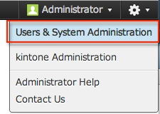
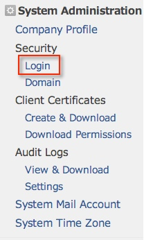

Go to Cybozu at https://<your domain name>.cybozu.com. Enter your login name and password, and then select Login.
Under the gear icon in the upper right, select Users & System Administration, as shown below.

In the menu that appears on the left, select Login in the Security section, as shown below.


Copy the following information into the Login URL field.
Sign into the Okta Admin dashboard to generate this value.Copy the following information into the Logout URL field.
Sign into the Okta Admin dashboard to generate this value.Download the certificate below.
Sign into the Okta Admin dashboard to generate this value.Upload it to the certificate field by clicking the Browse button.
Click Save.